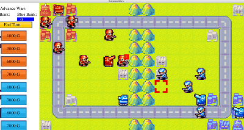
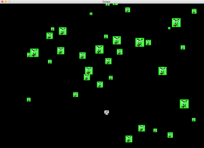
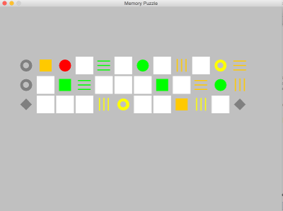
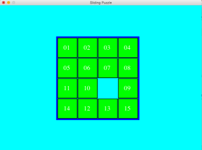

Great Java programmers reuse code
This section is focused on answering what you need to know and why. How to do it can be found with a search online.
Gather a list of requirements you want, then program. Simple.
A large part of these notes are paraphrased from the following books and YouTube channels.
   
Thinking in Java 3rd Edition describes the strengths and weaknesses as follows
50% of programming activities use client/server computing. There are many requests coming in and sometimes Middleware
and client-side programming like JavaScript can help.
Strengths
It is said that Java should be preferred over C++ in most cases because the programmer is 2x as productive. As of 2015, applets are considered no longer very useful because some major browsers have decided to no longer support them (also they may require JRE to be installed on a client's computer).
Object-oriented programming has been adopted by almost every modern language. This is needed to add structure to a program; data and operations are placed in containers. An object combines data and operations and can implement an interface.
Objects are service providers; if I could magically pull an object out of a hat, which objects would solve my problem? Objects make programs less complicated and are intuitive because they closely reflect the way humans think. The blueprint for creating an object is called a class. There are two types of programmers, class creators and client programmers. Class creators expose what is necessary with interfaces but keeps the rest hidden. The client programmer collects these classes and uses them to solve problems. You create a class to define your own blueprint for an object. An object is made up of fields, getters/setters, methods, and a constructor. When you compare two objects use the equals method instead of ==. You can save objects after a program is finished by saving it to a database.
You can set up classes to allow parameters to be passed to methods or constructors. One public class is allowed per file.
Primitives are not objects and are special. In almost all cases you can use just four primitives and they are int, double, char, and boolean. If a primitive type variable holds the value 4, then just think that the variable represents 4. Strings are objects and are unchangable and don't require the new keyword. You want to use BigInteger and BigDecimal objects for really big numbers. Everything else is an object that is created with the new keyword. There is a TV and a remote control, the TV is every object you create, and the remote control is every variable you assign an object. An array or list is just a collection of many remote controls.
Java is a statically typed language, so when you initialize a variable as a data type, you then use it as that data type. If a function requires an integer parameter, you are unable to pass in a string parameter like "6". Doing so would be okay in a dynamically typed language.
These are good things that may be frequently used:
void methodName(int parameterValue1, String parameterValue2)
For primitive parameters, the value passed in is cloned onto the parameter variable. Since it is cloned, changing the parameter variable's value will not affect variables assigned outside the method. For objects, you pass in remote controls that are programmed to either TVs or nothing; the parameter variable is a remote controller that is programmed to control the same thing as the remote passed into the function. If you decide to reprogram the parameter variable it won't affect the remote control you passed into the function. If you change the object with this remote control, you will be changing it for both remote controllers because they point to the same TV. A String is unchangable so if two remote controls point to one String and one remote control tries to change the String, the result will be that one remote will look at the old String, and the remote that changed the String will just point at a newly created String.
Static means it isn't tied to a particular instance of the class. Classes cannot be static. Methods and fields can be static.
Public/private is a keyword placed before a class, field, getter/setter, constructor, or method. Private means it is hidden from other classes and public means it is visible to other classes.
A good description for these four major principles of OOP. can be found here. When you use these principles, your programs will be easier to maintain, which is very important when you have to change the code. I'm still learning about these principles, so I won't describe this accurately, but I'll explain it simply. To use encapsulation set the fields to private, all tasks that the object should be doing should live inside that class. This means that if class B needs something to be done and it makes sense for class A to do it, class B may need to delegate work to class A.
You will probably be using abstraction by simply creating an object.
Inheritance is useful, but even the creator of Java jokingly said inheritance was their biggest mistake. Inheritance is similar to cloning a class and providing slightly different behavior and maybe different fields. Inheritance is done by using the "extends" keyword in the class definition. One benefit to inheritance is upcasting. Try to rarely use inheritance unless it is a clear choice. You have two choices
Inheritance should have an IS-A relationship such as "a dog IS-A animal" or "a circle IS-A shape". So to reiterate, if you need a dog and already have an animal class, you might choose to create a dog class that inherits from animal. If you have IS-LIKE-A relationship you might turn to inheritance too. In this case, if you need two classes that are similar, you might create a third abstract class to be the parent of both classes. Creating this third class can help the design better follow these principles.
Polymorphism is used when you use the strategy design pattern. You implement interfaces with the "implements" keyword in the class definition.
This is overriding (which was just mentioned) that does different behavior
based on which what the object's class is. A very useful form of polymorphism is composition. Composition is used with HAS-A relationships (A car HAS-A tire)
An example of composition is defining Shape as a field in your class
and at runtime you have the option of setting a child of shape to that field, such as triangle or circle; when you tell that field to draw, it behaves
differently based on which child you set to the field.
Collections have different big O notations for their methods.
It is easy to initialize collections in Java. fill() helps fill arrays. Need to read Java - The Complete Reference Chapter 19.
Use Map as the type and HashMap as the implementation. HashMap is good for registering things. You can get from the HashMap with a method that checks if the key is not contained and throws an error, otherwise it returns the value for the key.
int[] a1 = { 1, 2, 3};
It is important to know the many standard Java collections.
The order of initialization is:
You can call constructors within constructors, including the superclass constructor.
Documentation is important because it lets you share your program with others.
You can easily generate documentation by typing /** and pressing enter above your methods in an IDE. Then in Eclipse go to "Project" > "Generate Java Doc".
When prompted, you usually only add public accessors, then click yes to all. There are tags found online to improve your Java Doc.
Thinking in Java 3rd Edition recommends adding //: folder:filename.java to the top of the file. Then add ///:~ to the end of the file.
You use if, else if, and else. There are also switch statements, while loops, do while loops, for loops, and enhanced for loops. if, else if, and else
if (number > 10)
System.out.println("Greater than 10");
else if
(number < 5)
System.out.println("Less than 5");
else System.out.println("Between 5 and 10");
Ternary operator, is a quick way to do if else
minVal = (a < b) ? a : b; (Example from alvinalexander)
for loop
for(int i = 0; i < n; i++) {System.out.println(i);}
enhanced for loop
int[] numbers = new int[10];
for (int number : numbers) {System.out.println(number);}
switch statement
switch(i) {
case 0:
System.out.println("0");
break;
case 1:
System.out.println("1");
break;
default:
System.out.println("default");
break;
}
Statement "break;" will break out of an interation statement like "while" or "for loops". Statement "continue;" will skip to the next iteration of the iteration statement.
Package names are always lowercase. Always make your package namet he reverse of your website domain so it is guarenteed to be unique.
Compile files to get .class files which are runnable. Group the .class files into jars to share your library. You may need to define the classpath to .class directories unless eclipse/Intellij does this for you.
Importing is done with the import keyword. This is how you use other packages. Classes are put in packages, which are put in libraries.
Overloading is a term that means that you define the same method (applies to constructors too) multiple times in a class, but you define each with its own unique parameter signature. A parameter signature is the number of parameters used, and the data types of the first parameter, second parameter, etc. So you can define the same method name as long as the signature is different.
Overriding is a term for when you define a method of the same name as an implemented parent method. Overriding will replace the method behavior with the newly defined behavior
Implements is a term for when you define a method of the same name as an unimplemented parent method. Implemented means a method definition is defined.
Recursion is when you define a method in terms of itself (Java - The Complete Reference). It is used because it is easy to understand. Recursion usually works by defining an exit condition at the top of the method, and later having the method call itself but getting closer to reaching the exit condition.
Nested Classes are used when only one class will make use of the class and you want to keep it hidden from other classes. It is perfectly valid to define a class inside a class. You define the nested class in the same area you would define a method/field/constructor for the first class.
Command line arguments are passed into the function by the "String[] args" parameter passed into the main function. All Java programs begin with a main(String[] args) call.
Final is used to say "this cannot be changed". Use it for design not efficiency (although it runs slightly faster). Final to an object means you can't reprogram the remote control to another object. Final static public is common. Naming for final is usually in all capital letters. You must initiialize final fields in the fields or in the constructor. Useful to prevent overriding. Final placed on classes means that you cannot inherit from that class.
This section has information from Java - The Complete Reference
An example enum is:
enum Answers {
NO, YES, MAYBE, LATER, SOON, NEVER
}
So now I can return data type "Answers" from a function and I can then use enums in the boolean part of a switch (or if/else) statement.
Annotations look confusing and I plan to avoid using them unless necessary. You use the reflective library to read annotations at runtime. Annotations don't change the behavior of the code, but is useful for documentation that can be read at runtime.
This section is based on a chapter in Java - The Complete Reference
Text-based console I/O is just not that useful in real-world Java programming. I/O through streams; streams are an abstraction that either produces or
consumes information (this abstraction makes things simple to have many types of input and output). Use java.io for streams. Two stream types
Character streams are preferred and are better for internationalization and maintainability. java.lang automatically is imported and has a class called System.
try (FileInputStream fin = new FileInputStream(file1Here);
FileOutputStream fout = new FileOutputStream(file2Here);
System.in is a type of InputStream, which is passed into InputStreamReader. InputStreamReader converts Bytes to characters. BufferedReader helps create a character stream. Putting it all together you have:
BufferedReader br = new BufferedReader(new
InputStreamReader(System.in));
One option you have with br is to read characters one at a time.
do {
c = (char) br.read();
} while (c != 'q');
Another option is to read strings one line at a time
do {
str = br.readLine();
} while (!str.equals("stop"));
PrintWriter pw = new PrintWriter(System.out, true);
Scanner in = new Scanner(System.in);
Chapter 14 of Java The Complete Reference (Unread)
Test a single unit. A unit is a single method, group of methods, or a set of classes. Use "Maven Projects" when using unit tests. Create a new "JUnit Test Case" in the test directory to start a test. A test that completes is a success. Have one test per unit test, but if you choose to have two, write a String message at each assertion; that will be displayed if the test fails. Specific unit test names make the tests more maintainable. If code is used for multiple unit tests in a test class, consider if it can be run as fields outside the unit tests but within the test class. Test class names usually end with "Test" and unit tests can start with the name "test". @Test is placed above each unit test. @Before and @After are annotations placed above new methods; @before is used before every unit test and @after is used after every unit test (so it would be called multiple times if you have more than one unit test in the test class). @BeforeClass and @AfterClass annotations are also used before new methods, too. @BeforeClass is the method run first in the class. @AfterClass is the method run last in the class after all unit tests.
The special way of testing exceptions is by placing an annotation before the method like this: @Test(expected=NULLPointerException.class) This will fail if the exception isn't thrown.
To test for performance you set a timeout time in milliseconds. So you would add the annotation @Test(timeout=1000).
If you want to test a method many times, you can use parameterized JUnit tests, which involve arrays.
@Parameters
public static Collection
String expectedOutputs[][] = {
{ "AAD", "CD" },
{ "ACD", "CD" } };
return Arrays.asList(expectedOutputs);
}
A test Suite can be created like a unit test class. It groups the unit tests so you can run a set of them all at once. It is like a job file in Pentaho. You could try running the slower unit tests less often out of convenience.
Nearly all programmers don't like to make tests (Review of book)
A Vital aspect of unit tests are that they are finely grained. A unit test independently examines each object you create, so you can isolate the problems as they occur. (book)
Data structures are a way of storing data in a computer. Algorithms are the procedures used to manipulate the data structures. Algorithms can involve complicated math. To improve the efficiency of solving problems, more sophisticated techniques are necessary.
Data structures and algorithms are useful for three main categories
Common algorithms are
If little data, do you know how many items will be in it? Do you need to insert or search more often?
The data structures to use are sorted/unsorted arrays or lists. It might also be useful to use stacks, queues, deque, priority queue.
If a lot of data, do you need to run operations extremely fast? Then use a hash table. Otherwise use a tree.
Is it possible that the data could be passed in in ascending or descending order? In that case don't use a binary tree, but instead use
a red-black or rebalancing tree. Otherwise a binary tree works pretty well.
There are elementary sorts like bubble sort, selection sort, and insertion sort. However, when simple and quick is ideal, use shellsort. If it becomes to slow, switch to quicksort. Merge sort is also a viable option. Radix sort is extremely fast, and actually seemed very simple when implemented in one case. There is also count sorts which are extremely fast when the range of values are small; this is different from a compare sort.
Stacks and Queues have O(1) time insert/removes. Not used as much for search, isnert, and delete. Deques are double ended, while queues are first in first out, and stacks are last in is first out. You can implement a queue or a stack with a deque. One problem these help solve is evaluating math equations with postfix.
Favor loops and stacks over recursion most times, it simplifies a problem concepually, but isn't most efficient for the computer. It is similar to mathematical induction. Merge sort will use recursion. You want to transform these problems into stacks to be more efficient; so rethink how to solve the problem with a stack.
Use it for quick search and quick insert/delete. Some other data structures provide either quick search or fast insert/delete but not both of these at the same time. A tree has nodes and is connected by edges, so it is an instance of a graph. A binary tree has a maximum of two children. Left children are less than the parent, and right children are greater than or equal to the parent. Beware unbalanced trees, which usually occur when you insert nodes in sorted order, so all children would be on one side of each parent.
Goals are to find a node, insert a node, traverse the tree, and delete a node. Finding is simple. Inserting is simple. Traversing is three steps.
If you want to traverse in a different order you can rearrange these steps. Min and max is easy to find, just go left everytime or right everytime. Deleting is complicated; the simple way is to say isDeleted=TRUE, but this wastes memory. The complicated way is to:
Trees can be represented with an array, it is inefficient, but left child and right child can be found by plugging the current index into a formula. Deletion can leave wasted memory and potentially complicated. Usually delete is not allowed with this set up. Can be useful for graphically showing a tree.
You must decide if your binary tree will allow duplicate keys. If you don't allow duplicates, you can make inserts fail when a duplicate is found. If you allow duplicates you may have to continue searching when searching/deleting data.
Red-Black Rules When inserting (or deleting) a new node, certain rules, which we call the red-black rules, must be followed. If they're followed, the tree will be balanced. Let's look briefly at these rules:
X: current; P: parent; G: grandparent Insertion: (Always inserts red) There are only three cases, these hold true always and will be all you need to balance insertions.
Using color flips on the way down has eliminated the situations in which a rotation could introduce any rule violations further up the tree. It ensures that one or two rotations will restore red-black correctness in the entire tree. Actually, proving this is beyond the scope of this book, but such a proof is possible. If you code this manually instead of a library you may want to make a simple delete with a boolean statement on the nodes, because deleting is even more complicated.
2-3-4 is a very simple balanced tree to visualize and understand intuitively. It is essentially equivalent to the red-black tree because it can be turned into one with a transformation. Inserts are always done on leafs, leafs at the bottom row, and full leafs do a split which affects rows higher up. They're balanced trees like red-black trees. They're slightly less efficient than red-black trees but easier to program. They serve as an easy-to-understand introduction to B-trees. A B-tree is another kind of multiway tree that's particularly useful for organizing data in external storage. 2-3-4 tree is self balancing For searches you go right or left based on how high or low the number is. The node 60|70|80 has four children; one for less than 60, one for greater than 60 and less than 70, one for greater than 70 less than 80, and one for greater than 80. New data items are always inserted in leaves, which are on the bottom row of the tree. If items were inserted in nodes with children, the number of children would need to be changed to maintain the structure of the tree, Insertion Either simple or more complicated. All insertion happens in the leaf nodes (bottom). If the leaf isn’t full, it is simple. If the leaf is full it must be split; splitting keeps the tree balanced. insert full node (not root): insert full root node: Examples: Here's why the splits are so different. In either kind of tree a node split requires three data items: one to be kept in the node being split, one to move right into the new node, and one to move up to the parent node. 2-3 tree splits: Seems like you can treat it the same as 2-3-4 by first inserting it, then treating it like 2-3-4. B-Tree In fact, the structure of a B-tree is similar to that of a 2-3-4 tree, except that there are more data items per node and more links to children. Because there are so many records per node, and so many nodes per level, operations on B-trees are very fast, This minimizes disk accesses; because there are less levels with 4 slots per node. One block can be accessed at a time and they take 10 milliseconds to access; I think the B-Tree stores one block per node. Although searching is faster in B-trees than in sequentially ordered disk files, it's for insertion and deletion that B-trees show the greatest advantage. This is 5 accesses in addition to the 6 necessary to find the insertion point (splits), for a total of 12. This is a major improvement over the 500,000 accesses required for insertion in a sequential file. with a different key, can be created for the same file. In one index the keys can be last names; in another, telephone numbers; in another, addresses. Because the indexes are small compared with the file, this doesn't increase the total data storage very much. It does make deleting more complicated. A B-tree is a multiway tree in which each node may have dozens or hundreds of keys and children. b faster search, insert, and delete. Wastes space 3rd (1,2,3) index 2 False, inserted not located a (new root) b splitting and there is growth upwards a 2 double child red parent split (rotations or double color flips??) c (Seems true, but least likely true) b Log2N LogN a (kind of false / relative) d N or N-1, or unlimited I would say 2-3-4 similarities, or also true a
No matter how many data items there are, insertion and searching (and sometimes deletion) can take close to constant time: O(1) in big O notation. In practice this is just a few machine instructions. Not only are they fast, hash tables are relatively easy to program. Hash tables do have several disadvantages. They're based on arrays, and arrays are difficult to expand after they've been created. For some kinds of hash tables, performance may degrade catastrophically when a table becomes too full, so the programmer needs to have a fairly accurate idea of how many data items will need to be stored (or be prepared to periodically transfer data to a larger hash table, a time-consuming process). Also, there's no convenient way to visit the items in a hash table in any kind of order (such as from smallest to largest). If you need this capability, you'll need to look elsewhere. However, if you don't need to visit items in order, and you can predict in advance the size of your database, hash tables are unparalleled in speed and convenience. Hash functions and hash tables We multiply the word into a large number: Then using the modulo operator (%), we squeeze the resulting huge range of numbers into a range about twice as big as the number of items we want to store. Example: We pay a price for squeezing a large range into a small one. There's no longer a guarantee that two words won't hash to the same array index.
Even so, it's impossible to avoid hashing several different words into the same array location, at least occasionally. We had hoped that we could have one data item per index number, but this turns out not to be possible. The best we can do is hope that not too many words will hash to the same index.
Three methods talked about. Linear probing is walking forward until a blank is found when not found on initial look.
To create a jar you need to compile .java to become .class. To compile from .java to .class you need all dependencies of the .java file to be in the CLASSPATH. Run unit test. Combine all classes to a jar. Maven does many things. Maven makes it simpler to make jar Files, it used to require hand written code (in Ant) but Maven does it for you.
"If one class is dependent on another class that hasn't been compiled yet, the program won't run." All projects have steps: compile, run tests + validate main/java is fine, package jars, and install it / deploy it. maven does these for you. mvn install (Shortcut to do all of these at once: validate, compile, test, package jar, integration test, verify, and install) Share the jar with a friend so they can use your class as a dependency.
Import project to eclipse File>Import; search "general" if from Intellij, search "maven" if compiled with maven. The choice has the word "existing" in it both times. This is the pom.xml file I am using, not sure if it is a standard one; it seems to work
Pom is made up of
name: groupId and artifactId together are the name.
version: 1.0.1-SNAPSHOT: made up a major, minor, incremental, and the snapshot keyword; Use snapshot when still in development of that version. Major changes with major changes, minor with minor changes, and incremental with things like bug fixes.
packaging: jar should work
dependencies: could be Spring MVC (with version number), Hibernate, JUnit. The maven repository holds all the versions of the possible dependencies. Maven will get it from the repository. Some dependencies have dependencies come along with them. The dependencies should be listed in "Maven Dependencies" in Eclipse. To exclude commons-logging from hibernate, you can add to the <exclusions> tag inside the dependency tag so it isn't one of your dependencies. Dependency hierarchy tells you more about how the dependencies are coming into the "Maven Dependencies". Maven gets the highest version it has that satisfies the version range. Different range examples: [,4.1] [,4.1) (4.1,] [4.1, 4.4] [4.1,] scope is where the dependency will be used.
plugings: source and target need be the Java version. You may use groupId, artifactId org.apache.maven.plugin, maven-compiler-plugin
A quick save actions tutorial is found here. Save actions are actions taken by Eclipse when the document is saved, like auto formatting or adding tabs.
Put a breakpoint. Stop where I put the breakpoint. Right click on line (left of coding area) > Toggle Breakpoint Right click on code area > Debug As > ... you can right click on a variable and change the value too in the variables view top of screen > Run > Resume, (continue until next breakpoint or end of program) terminate, step into (goes into method), (Hotkey available) step over (Hotkey available) can hover over the variables on the code area and the values pop up right click on a variable in the code > Watch You can apply a function like multiply the value by 5 or invoke toString() or another function
Eclipse > preferences > formatter > Edit command+shift+F will auto format based on your rules Auto format on Save Eclipse > Preferences > Save Actions > Format Source Code
Window >show views > others: shows all available views
Someone can develop any web application with Servlets. One servlet can be reused for many clients. There are request and response objects. You work with GET and POST requests often. Parameters are passed in the GET or POST requests. GET shows the parameters in the URL and post does not. JSPs are HTML pages with Java code embedded in the document. JSTL is an improvement on JSPs.
There is a tutorial for JSPs online that covers these topics.
Watch JavaBrains tutorials on Hibernate or read the documentation online. Viewed about half of these.
Here is working Hibernate 5 code.
It's useful to know that an object is similar to a database record with a class field similar to a database field.
Any database software is fine.
One issue with my first attempt was that I thought I set a password, but actually didn’t. Downloaded the jars and didn’t use Maven and that works well. Used Hibernate 5 code instead of some Hibernate 3 code used in videos.
To fix the mapping issue, the solution was to update the way you get the sessionFactory for the version 5 of Hibernate.
Hibernate can be set to do things like “create”, “create-delete”, “update”, etc.
Hibernate has annotations for primary key, column name, entity name, table name, data type. The data type is still guessed well if you don’t use the annotation.
It seems like changing the data type might require an annotation near the getter instead of the field.
You can retrieve objects by: primary key, HQL, SQL, or perhaps another way too. You can set a field as auto generated primary key with an annotation.
You can store into the database: objects or collections. That are fields of the model. Entities are their own tables, they are independent and provide meaning by themselves. You can makes dto objects embeddable or embedded to store some of the values of an object of an entity object onto the table. You can use attribute override to rename the columns that you are embedding; useful when you have two of those objects because you need unique column names. There is an embeddedId too; this makes the primary key the combination of many fields (either all of the model fields or all of the fields in an object on the model object, not sure which one).
User Set (HashSet) or Collection (ArrayList).
hilo generator no longer works; instead you can use: @GenericGenerator(name="sequence-gen", strategy = "sequence")
Hibernate is lazy by default and won’t define objects within objects. The object within the model object will be filled when you call the getter on it. To do this, Hibernate extends your class and overrides your getter method. You can configure Hibernate to not by lazy with certain objects by using an annotation.
More videos talk about One to One, One to Many (There is also Many to One) and Many to Many. Only the many to many requires a third table (Entity + Entity + Relationship tables); however, Hibernate will by default create a third table for One to Many relationships.
For Java, relationships are stored in objects; collections or sets are X to many relationships. Individual fields are X to one relationships; where X can be one or many depending on the other object using a collection/set/regular-field.
Get object by primary key id (HQL and SQL are other ways not covered yet) auto generate id objects within objects 1 to 1 relationship (put data on own table) overriding the names of objects when using objects within objects. sets/arrays inside objects 1 to many relationship (put data on new table) (many to many would be three tables required, where one maps the relationships and two are for the entities)
Watch JavaBrains tutorials on Struts2 or read the documentation online. Viewed these.
Google: Apache Struts 2 download
View update notes for 2.3 (2.5 was newest version)
Copy the maven dependency (reminder: right click on an existing project in eclipse to find an option to make a Maven project)
Files to use:
namespace allows new url combinations like tutorials/tutorial1
org.myers.actions - can hold the Java action classes org.myers.service - can hold the Java business services called by action classes
One major change when using Struct2 is that you really want to avoid assigning parameters and attributes to the request, service, application, and page. Instead you use tags. Save the variables to an object’s fields. This is because an action class is created for each and every request; in regular servlets new threads are created, instead of new objects. So, use getters for Struct2 and session/application/page scope for regular Servlets. If you need something at session scope with Struts2, you just save it as a new variable name that you will use for session type information. All action classes (and some others the tutorial hasn’t talked about yet) have their fields stored on the action stack. The action stack will return the most recent instance of that field value using a getter. Older versions of that field can be accessed if needed using another method.
Intercepters save the input into the value stack action class fields (Is this safe, to allow these to be updated?)
extending a class, adding validate method: if the validate fails Struts2 will return “input”. Adds field errors to user.
You can have a different method run by default other than execute().
Use a model object in a model package to store the data, for passing around and validation. You can tell Struts to set parameters to the model fields instead of the action fields. Struts automatically instanciates the models if they are private fields in the action. Another way is to implement the ModelDriven interface.
Watch JavaBrains tutorials on the Spring Framework or read the documentation online. Viewed these.
Spring allows loose coupling though dependency injection by constructor or setter method.
Programs change, otherwise they die. It is best if programs are maintainable, and patterns allow this.
Uses composition by storing an interface type on the object and it can change at runtime. The task is delegated to the interface.
A one-to-many dependency between objects so that when one object changes state, all of its dependents are notified and updated automatically. Picture this by thinking of a newspaper subscription service with a publisher and subscribers. The observer requests on or off the list and the subject adds or removes them from the list. Either design your own or use Java's slightly flawed Observable and Observer (java.util) code.
The decorator becomes the same supertype as what it is decorating. This allows extending without modifying the original class code. One example is java.io.* which uses this a lot. Each time you add a decorator you pass in what it is decorating to the constructor and when a method is called you add behavior before or after delegating to that which is being decorated.
Careful: Makes code more complicated and breaks code that doesn't program to a superclass. Involves creation of many small classes.
Create a factory for each group of products. One method. One product can have many components but they are not changeable.
Create a factory for each group of products. Many methods, allowing mixing and matching of components of a product.
Interface for execute. Pass the device into the remote constructor then delegate execute to the device when buttons are pressed. Create the remote, the command (has execute method), and the device. Put the device inside the command and the command inside the remote.
(The device is the one who knows how to do the task. The remote is the one that decides when to request the task. The remote says what to do, and the device does it. The command portion can call multiple methods in the device to complete the command)
Note: Not very far in the book yet
Additional Notes Inheritance helps with code reuse but doesn't offer much flexibility.
You can use the interfaces, Request which takes a string, Response, RequestHandler which processes a request with the method "process" and can throw an exception. Controller would have a method processRequest and takes a Request; it has an addHandler method which takes a Request and a RequestHandler. You will make an ErrorResponse, which stores the original request and exception. Core of the controller class is processRequest which returns the Response or the ErrorResponse which are both implementations of Response.
Thrown when IO operations fail and a string message can be included. The common subclasses of this are for file not found, end of file, unsuported encoding, socket, and SSL. Try printing the exception out and fixing it when it occurs.
Log is the interface and there are several implementing classes such as Log4JLogger, which I've heard is a popular logging framework or tool. This abstracts away different logging APIs. The class implementing this is instantiated using the LogFactory. The constructor of these objects have a single parameter simply to "name" the Log. The implementation of the logging will group logs into six groups going from least serious to most serious they are: trace, debug, info, warn, error, and fatal. You can log messages to any of these logs in your code.
To log the data in areas that are performance concerns, try an if condition checking if debug is enabled, if it is, log the result to the debug logging level. Configuration of logging is usually based on the logging API used.
Log the message to one of the six log groups. Check if each of the six log groups are currently enabled (Boolean returned). Log a message to one of the six log groups and also throw an exception.
A factory for creating classes that implement the Log interface. The constructor is protected, so will likely use static methods. Simple usage of this involves using static method getLog which takes in a string of the name you want to give the Log. A good name is yourClassName.class where yourClassName is the class you're working inside with the log; this outputs a string like "class yourClassName".
Is a superclass of all errors and exceptions. This concrete class or subclasses of it are the only ones the JVM allows to be thrown by the "throw" keyword or be the argument type in a catch clause. The exception should be thrown in the lower level, and not propogated to the upper level. More to be written on this.
Configuration files. You specify a path, or you can also create default files. The default files should show up at etc/hadoop/conf, but I'm not certain. These filse contain xml tags called "property" which contain a key, value, and optionally final which is true or false. The Configuration class has a get function that looks up the key and returns the value. There are different get functions that expect the value to be a certain data type or collection. There is also a set used to set the values. You can add keys and values as new resources. You can flag things as deprecated.
Inherits from org.apache.hadoop.conf.Configuration. Has static methods create() and create(org.apache.hadoop.conf.Configuration that). No constructors should be used. No parameters creates a configuration with HBase resources. Using parameters uses the hbase-*.xml files and the given configuration.
These extend IOException. Thrown if master is not running, and when the client can't connect to zookeeper respectively.
Lets you update a file. Press i to start updates. Press escape to stop updating. Type :wq to save and quit. Type :q! to quit without saving.
A type of encoding to be used in a document like an XML document or HTML document. The UTF-8 represents each character using two bytes to allow for use of accents or currency symbols. Version 1.0 of XML is usually sufficient.
Stores in project conf folder. Three choices include logging output to the console, a file, or both. The rootLogger option is used to determine if the logs will go to a file, the console, and/or standard output. The logger threshold is the least important log group you want to be notified of (ALL) is for all. A message is accepted by the logger, then are handed off to the appender, which will add the message to the console, file, and/or standard output. You define two appenders if you want to send logs to a file and the console. It is a good habit to send things to log4j even if you're testing and outputing to the console. The layout of the appender is meant to format a logging event and return the results in a StringBuffer. The EnhancedPatternLayout is preferred over PatternLayout. The conversion pattern is similar to the printf function for string interpolation. %d is the date format for the logging event (i.e. %d{ISO8601}), %p is the priority of the event as a string, %t is the name of the thread, %c is the category of the logging event. The category name will be like alpha.beta.gamma, and %c{2} will return the last two elements, a minus sign before the 2 will remove the last two elements. %m is the message to be outputed. %n does the platform dependent line separator. The appender target is where it will target the output.
Use %-10s to left justify and give a total width of 10 characters. You can save the format and use it as a variable for each call of printf. One format to create a table is "%-10s %s\n" if the first string is 10 characters at most.
.avsc files are for Avro, a serialization framework mentioned when working with Kafka. Avro probably helps with serialization and Schema Registries. The file itself is a schema, that will be serialized by Avro.
Avro uses the .avsc file to create a Java class. Get Avro with Maven by adding the maven code with groupId org.apache.avro.
The .avsc is a schema file, defined in JSON. Types allowed are simple types: null, boolean, int, long, float, double, bytes, and string; Also allowed are complex types: record, enum, array, map, union, and fixed.
The namespace we want to put this in, namespace: "example.avro" and name: "User" will create a class "example.avro.User". In three examples I see
"type": "record" so it is good to go with that. The fields are the table columns and their types (types allowed were just mentioned). The unions
complex type is like this: "type": ["int", "null"]. Unions allow any of the specified types to be used for that field.
Use command: java -jar /path/to/avro-tools-1.7.6.jar compile schema <schema file> <destination>
For example: java -jar /path/to/avro-tools-1.7.6.jar compile schema user.avsc .
This will create a class example.avro.User at this current directory ".".
Libraries are stored as jars in Java. A jar can be a library and a runnable jar if you specify the main class. Create a manifest document with one
line to specify which class is the main class. Do this with echo manifest.txt (any name is fine but this is a good standard one)
and add the line Main-Class: yourClassName. Use command
jar cvfm MyJarName.jar manifest.txt *.class
cvfm is create jar verbose. You specify the jar and the manifest, and the list of class files.
The manifest file is optional and you can replace "manifest.txt" in the command to use the "MyMainClass"; but if you put more in the manifest file you need the file.
Use command: echo anyText >> newFileName.txt
to create a text file with text in it from the command line.
Go to the GitHub project in the browser and find the fork button. Use the button to add it to your repository. Use Intellij>VCS>Checkout>GitHub to checkout the forked project from your GitHub account. Close the current project and import the new project. If it isn't already a Maven project, click on the far right side "Maven Projects" (written sideways on the right edge). Add the pom.xml inside the project to convert it into a Maven project.
"export -p" will list the variables "|" pipe takes the output from one process and sends it as input into the next process. "egrep [MyPattern]" use egrep for regular expression grep. Grep finds a pattern from the input. Flag -i ignores the case.
Use command "git clone https://github.com/..." for the URL obtained from the GitHub project. Use mvn package to build the project.
PATH is used by the OS to find executables. CLASSPATH is used by Java to find classes or jar files.